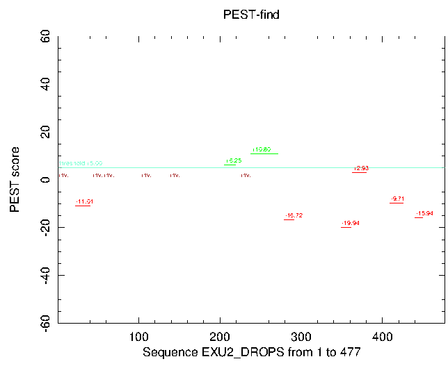

|
|
epestfind |
PEST means Black Death in German, so that the name of this programme sounds a bit strange, at least in our ears.
The epestfind algorithm defines the last criterion even more stringently in that PEST motifs are required to be flanked by positively charged amino acids. Though this implication greatly facilitates computer scanning, a few PEST sequences might be missed. Especially sequences with a high local concentration of critical amino acids but with a long distance between positively charged amino acids are error prone. Due to their length, these PEST motifs might become diluted, which results in scores apparently lower than initially expected. Another side effect of scanning for positively charged amino acids is that very long PEST motifs are sub-divided into adjacent smaller ones. However, identification of PEST motifs is achieved by an initial scan for positively charged amino acids arginine (R), histidine (H) and lysine (K) within the specified protein sequence. All amino acids between the positively charged flanks are counted and only those motifs are considered further, which contain a number of amino acids equal to or higher than the window-size parameter. Additionally, all 'valid' PEST regions are required to contain at least one proline (P), one aspartate (D) or glutamate (E) and at least one serine (S) or threonine(T). Sequences that do not meet the above criteria are classified as 'invalid' PEST motifs and excluded from further analysis.
The quality of 'valid' PEST motifs is refined by means of a scoring parameter based on the local enrichment of critical amino acids as well as the motif's hydrophobicity. Enrichment of D, E, P, S and T is expressed in mass percent (w/w) and corrected for one equivalent of D or E, one of P and one of S or T. Calculation of hydrophobicity follows in principle the method of J. Kyte and R.F. Doolittle [4]. For simplified calculations, Kyte-Doolittle hydropathy indices, which originally ranged from -4.5 for arginine to +4.5 for isoleucine, were converted to positive integers. This was achieved by the following linear transformation, which yielded values from 0 for arginine to 90 for isoleucine.
The motif's hydrophobicity is calculated as the sum over the products of mole percent and hydrophobicity index for each amino acid species. The desired PEST score is obtained as combination of local enrichment term and hydrophobicity term as expressed by the following equation:
Although, the formula above differs from the publication [1], it is in fact the correct one, which was also implemented in the original BASIC programme (personal communication). In addition, the programme includes a correction for the hydropathy index of tyrosine, introduced by Robert H. Stellwagen from the University of Southern California. However, PEST scores can range from -45 for poly-isoleucine to about +50 for poly-aspartate plus one proline and one serine. 'Valid' PEST motifs below the threshold score (5.0) are considered as 'poor', while PEST scores above the threshold score are of real biological interest. The higher the PEST score, the more likely is degradation of proteins mediated via 'potential' PEST motifs in eukaryotic cells.
Presently, all modified Kyte-Doolittle hydropathy indices are hard-coded into the programme, which might change in future.
The array of linear transformed Kyte-Doolittle hydropathy indices (ltkdhi) is listed in alphabetical order below. (A-M and N-Z as well as N-terminus and C-terminus)
63, 10, 70, 10, 10, 72, 41, 13, 90, 0, 6, 82, 64, 10, 0, 29, 10, 0, 36, 38, 0, 87, 36, 45, 58, 10, 0, 0
The linear transformation was ltkdhi = 10 * kdhi + 45
All values range from Argine R = 0 to Isoleucine I = 90
B=(N|D)=10 since N=10 and D=10
Z=(Q|E)=10 since Q=10 and E=10
X=10*0+45=45
% epestfind -graph cps -invalid
Finds PEST motifs as potential proteolytic cleavage sites
Input protein sequence: exu2_drops.embl
Window length [10]:
Sort order of results
1 : length
2 : position
3 : score
Sort order of results [score]:
Output file [exu2_drops.epestfind]:
Created epestfind.ps
|
Go to the input files for this example
Go to the output files for this example
Standard (Mandatory) qualifiers:
[-sequence] sequence Protein sequence USA to be analysed.
-window integer [10] Minimal distance between positively
charged amino acids. (Integer 2 or more)
-order selection [score] Name of the output file which holds
the results of the analysis. Results may be
sorted by length, position and score.
[-outfile] outfile [*.epestfind] Name of file to which results
will be written.
-graph xygraph [$EMBOSS_GRAPHICS value, or x11] Graph type
(ps, hpgl, hp7470, hp7580, meta, cps, x11,
tekt, tek, none, data, xterm, png, gif)
Additional (Optional) qualifiers:
-aadata datafile [Eamino.dat] Amino acids properties and
molecular weight data file
-threshold float [+5.0] Threshold value to discriminate weak
from potential PEST motifs. Valid PEST
motifs are discriminated into 'poor' and
'potential' motifs depending on this
threshold score. By default, the default
value is set to +5.0 based on experimental
data. Alterations are not recommended since
significance is a matter of biology, not
mathematics. (Number from -55.00 to 55.00)
Advanced (Unprompted) qualifiers:
-[no]potential boolean [Y] Decide whether potential PEST motifs
should be printed.
-[no]poor boolean [Y] Decide whether poor PEST motifs should
be printed.
-invalid boolean [N] Decide whether invalid PEST motifs
should be printed.
-[no]map boolean [Y] Decide whether PEST motifs should be
mapped to sequence.
Associated qualifiers:
"-sequence" associated qualifiers
-sbegin1 integer Start of the sequence to be used
-send1 integer End of the sequence to be used
-sreverse1 boolean Reverse (if DNA)
-sask1 boolean Ask for begin/end/reverse
-snucleotide1 boolean Sequence is nucleotide
-sprotein1 boolean Sequence is protein
-slower1 boolean Make lower case
-supper1 boolean Make upper case
-sformat1 string Input sequence format
-sdbname1 string Database name
-sid1 string Entryname
-ufo1 string UFO features
-fformat1 string Features format
-fopenfile1 string Features file name
"-outfile" associated qualifiers
-odirectory2 string Output directory
"-graph" associated qualifiers
-gprompt boolean Graph prompting
-gdesc string Graph description
-gtitle string Graph title
-gsubtitle string Graph subtitle
-gxtitle string Graph x axis title
-gytitle string Graph y axis title
-goutfile string Output file for non interactive displays
-gdirectory string Output directory
General qualifiers:
-auto boolean Turn off prompts
-stdout boolean Write standard output
-filter boolean Read standard input, write standard output
-options boolean Prompt for standard and additional values
-debug boolean Write debug output to program.dbg
-verbose boolean Report some/full command line options
-help boolean Report command line options. More
information on associated and general
qualifiers can be found with -help -verbose
-warning boolean Report warnings
-error boolean Report errors
-fatal boolean Report fatal errors
-die boolean Report dying program messages
|
| Standard (Mandatory) qualifiers | Allowed values | Default | |
|---|---|---|---|
| [-sequence] (Parameter 1) |
Protein sequence USA to be analysed. | Readable sequence | Required |
| -window | Minimal distance between positively charged amino acids. | Integer 2 or more | 10 |
| -order | Name of the output file which holds the results of the analysis. Results may be sorted by length, position and score. | Choose from selection list of values | score |
| [-outfile] (Parameter 2) |
Name of file to which results will be written. | Output file | <*>.epestfind |
| -graph | Graph type | EMBOSS has a list of known devices, including ps, hpgl, hp7470, hp7580, meta, cps, x11, tekt, tek, none, data, xterm, png, gif | EMBOSS_GRAPHICS value, or x11 |
| Additional (Optional) qualifiers | Allowed values | Default | |
| -aadata | Amino acids properties and molecular weight data file | Data file | Eamino.dat |
| -threshold | Threshold value to discriminate weak from potential PEST motifs. Valid PEST motifs are discriminated into 'poor' and 'potential' motifs depending on this threshold score. By default, the default value is set to +5.0 based on experimental data. Alterations are not recommended since significance is a matter of biology, not mathematics. | Number from -55.00 to 55.00 | +5.0 |
| Advanced (Unprompted) qualifiers | Allowed values | Default | |
| -[no]potential | Decide whether potential PEST motifs should be printed. | Boolean value Yes/No | Yes |
| -[no]poor | Decide whether poor PEST motifs should be printed. | Boolean value Yes/No | Yes |
| -invalid | Decide whether invalid PEST motifs should be printed. | Boolean value Yes/No | No |
| -[no]map | Decide whether PEST motifs should be mapped to sequence. | Boolean value Yes/No | Yes |
ID EXU2_DROPS STANDARD; PRT; 477 AA.
AC Q24617;
DT 01-NOV-1997 (Rel. 35, Created)
DT 01-NOV-1997 (Rel. 35, Last sequence update)
DT 01-NOV-1997 (Rel. 35, Last annotation update)
DE Maternal exuperantia 2 protein.
GN EXU2.
OS Drosophila pseudoobscura (Fruit fly).
OC Eukaryota; Metazoa; Arthropoda; Tracheata; Hexapoda; Insecta;
OC Pterygota; Neoptera; Endopterygota; Diptera; Brachycera; Muscomorpha;
OC Ephydroidea; Drosophilidae; Drosophila.
OX NCBI_TaxID=7237;
RN [1]
RP SEQUENCE FROM N.A.
RX MEDLINE=94350208; PubMed=8070663;
RA Luk S.K.-S., Kilpatrick M., Kerr K., Macdonald P.M.;
RT "Components acting in localization of bicoid mRNA are conserved among
RT Drosophila species.";
RL Genetics 137:521-530(1994).
CC -!- FUNCTION: ENSURES THE PROPER LOCALIZATION OF THE MRNA OF THE
CC BICOID GENE TO THE ANTERIOR REGIONS OF THE OOCYTE THUS PLAYING
CC A FUNDAMENTAL ROLE IN THE ESTABLISHMENT OF THE POLARITY OF THE
CC OOCYTE. MAY BIND THE BCD MRNA (BY SIMILARITY).
CC --------------------------------------------------------------------------
CC This SWISS-PROT entry is copyright. It is produced through a collaboration
CC between the Swiss Institute of Bioinformatics and the EMBL outstation -
CC the European Bioinformatics Institute. There are no restrictions on its
CC use by non-profit institutions as long as its content is in no way
CC modified and this statement is not removed. Usage by and for commercial
CC entities requires a license agreement (See http://www.isb-sib.ch/announce/
CC or send an email to license@isb-sib.ch).
CC --------------------------------------------------------------------------
DR EMBL; L22553; AAA28523.1; -.
DR FlyBase; FBgn0014783; Dpse\exu2.
KW Developmental protein; RNA-binding.
FT DOMAIN 249 271 GLU/SER/PRO/THR-RICH (PEST REGION).
SQ SEQUENCE 477 AA; 53194 MW; 8B5334A77DB9467B CRC64;
MVSAISEDSA SATASGQCEV VKEELPAGNY ILVAVEIDTT GRRLIDEIVQ LAGYTSKGNF
QQYIMPYMNL NQAARQRHQI RVISIGFYRM LKSMQTYKII KSKSEVAALM DFLNWLETLL
AKQPNKEGIV MLYHDDRKFI PYMILEALKK YSLIDRFNRS VKAFANTCPM AKTFLGKHGI
KNCGLRKLSM LLAKSKDGNS TKEDEHENPE GNSSITDNSG HKNQKQGAFE GSANVRAKMV
YEMALQLIES ESTESPESFE SPESSESSEA EVKLLNAVRP FSQLLSSTIL ELKDQNHSLG
RQNSFRPVFL NYFRTTLNYR VRAVKYRIGL AEHGFTLKSL KAIWSDKRKP GLELVLTAID
SLKTEETAEL LDLLDSYYDP SKTTIKPRCK RSGNGTRRRN RAKGAASSKN GAIGAGGDNS
VPDSATKPGG RPRRKRNNIR NNILGPQNTE KGSPKAEMKT STPKSMSIKP PSEFADI
//
|
PEST-find: Finds PEST motifs as potential proteolytic cleavage sites.
14 PEST motifs were identified in EXU2_DROPS
from positions 1 to 477 and sorted by score.
Potential PEST motif with 34 amino acids between position 238 and 273.
238 KMVYEMALQLIESESTESPESFESPESSESSEAEVK 273
DEPST: 54.46 % (w/w)
Hydrophobicity index: 38.31
PEST score: 10.80
Potential PEST motif with 14 amino acids between position 206 and 221.
206 HENPEGNSSITDNSGH 221
DEPST: 36.04 % (w/w)
Hydrophobicity index: 27.16
PEST score: 6.25
Poor PEST motif with 18 amino acids between position 363 and 382.
363 KTEETAELLDLLDSYYDPSK 382
PEST score: 2.93
Poor PEST motif with 17 amino acids between position 409 and 427.
409 KNGAIGAGGDNSVPDSATK 427
PEST score: -9.71
Poor PEST motif with 19 amino acids between position 22 and 42.
22 KEELPAGNYILVAVEIDTTGR 42
PEST score: -11.01
Poor PEST motif with 10 amino acids between position 440 and 451.
440 RNNILGPQNTEK 451
PEST score: -15.94
Poor PEST motif with 13 amino acids between position 279 and 293.
279 RPFSQLLSSTILELK 293
PEST score: -16.72
Poor PEST motif with 13 amino acids between position 349 and 363.
349 KPGLELVLTAIDSLK 363
PEST score: -19.94
Invalid PEST motif with 20 amino acids between position 1 and 22.
1 MVSAISEDSASATASGQCEVVK 22
Invalid PEST motif with 13 amino acids between position 43 and 57.
43 RLIDEIVQLAGYTSK 57
Invalid PEST motif with 17 amino acids between position 57 and 75.
57 KGNFQQYIMPYMNLNQAAR 75
Invalid PEST motif with 18 amino acids between position 103 and 122.
103 KSEVAALMDFLNWLETLLAK 122
Invalid PEST motif with 10 amino acids between position 138 and 149.
138 KFIPYMILEALK 149
Invalid PEST motif with 10 amino acids between position 225 and 236.
225 KQGAFEGSANVR 236
---------+---------+---------+---------+---------+---------+
1 MVSAISEDSASATASGQCEVVKEELPAGNYILVAVEIDTTGRRLIDEIVQLAGYTSKGNF 60
-------------------- OOOOOOOOOOOOOOOOOOO ------------- ---
61 QQYIMPYMNLNQAARQRHQIRVISIGFYRMLKSMQTYKIIKSKSEVAALMDFLNWLETLL 120
-------------- -----------------
121 AKQPNKEGIVMLYHDDRKFIPYMILEALKKYSLIDRFNRSVKAFANTCPMAKTFLGKHGI 180
- ----------
181 KNCGLRKLSMLLAKSKDGNSTKEDEHENPEGNSSITDNSGHKNQKQGAFEGSANVRAKMV 240
++++++++++++++ ---------- ++
241 YEMALQLIESESTESPESFESPESSESSEAEVKLLNAVRPFSQLLSSTILELKDQNHSLG 300
++++++++++++++++++++++++++++++++ OOOOOOOOOOOOO
301 RQNSFRPVFLNYFRTTLNYRVRAVKYRIGLAEHGFTLKSLKAIWSDKRKPGLELVLTAID 360
OOOOOOOOOOO
361 SLKTEETAELLDLLDSYYDPSKTTIKPRCKRSGNGTRRRNRAKGAASSKNGAIGAGGDNS 420
OO OOOOOOOOOOOOOOOOOO OOOOOOOOOOO
421 VPDSATKPGGRPRRKRNNIRNNILGPQNTEKGSPKAEMKTSTPKSMSIKPPSEFADI 477
OOOOOO OOOOOOOOOO
Symbols PEST motifs
+++++++ potential
OOOOOOO poor
------- invalid
|

The output from epestfind is a simple text one. It reports poor and potential PEST motifs together with their PEST score, mass percent of DEPST and their hydrophobicity index.
'Valid' PEST motifs below the threshold score (5.0) are considered as 'poor', while PEST scores above the threshold score are of real biological interest. The higher the PEST score, the more likely is degradation of proteins mediated via 'potential' PEST motifs in eukaryotic cells.
EMBOSS data files are distributed with the application and stored in the standard EMBOSS data directory, which is defined by the EMBOSS environment variable EMBOSS_DATA.
To see the available EMBOSS data files, run:
% embossdata -showall
To fetch one of the data files (for example 'Exxx.dat') into your current directory for you to inspect or modify, run:
% embossdata -fetch -file Exxx.dat
Users can provide their own data files in their own directories. Project specific files can be put in the current directory, or for tidier directory listings in a subdirectory called ".embossdata". Files for all EMBOSS runs can be put in the user's home directory, or again in a subdirectory called ".embossdata".
The directories are searched in the following order:
Here is the default Eamino.dat file:
# Molecular weights of amino acids # Also classified as: # Tiny, Small, Aliphatic, Aromatic, Non-polar, Polar, Charge, +ve, -ve # A 71.0786 1 1 0 0 1 0 0 0 0 B 114.5960 0 1 0 0 0 0 -.5 0 1 C 103.1386 1 1 0 0 1 0 0 0 0 D 115.0884 0 1 0 0 0 1 -1 0 1 E 129.1152 0 0 0 0 0 1 -1 0 1 F 147.1762 0 0 0 1 1 0 0 0 0 G 57.0518 1 1 0 0 1 0 0 0 0 H 137.1408 0 0 0 1 0 1 .5 1 0 I 113.1590 0 0 1 0 1 0 0 0 0 J 0.0 0 0 0 0 0 0 0 0 0 K 128.1736 0 0 0 0 0 1 1 1 0 L 113.1590 0 0 1 0 1 0 0 0 0 # If met gets oxidised to the sulphoxide replace by 147.1926 M 131.1926 0 0 0 0 1 0 0 0 0 N 114.1036 0 1 0 0 0 1 0 0 0 O 0.0 0 0 0 0 0 0 0 0 0 P 97.1164 0 1 0 0 1 0 0 0 0 Q 128.1304 0 0 0 0 0 1 0 0 0 R 156.1870 0 0 0 0 0 1 1 1 0 S 87.0780 1 1 0 0 0 1 0 0 0 T 101.1048 1 1 0 0 0 1 0 0 0 U 0.0 0 0 0 0 0 0 0 0 0 V 99.1322 0 1 1 0 1 0 0 0 0 W 186.2128 0 0 0 1 1 0 0 0 0 X 144.0000 0 0 0 0 0 0 0 0 0 Y 163.1756 0 0 0 1 1 0 0 0 0 Z 128.6228 0 0 0 0 0 1 -.5 0 1
| Program name | Description |
|---|---|
| antigenic | Finds antigenic sites in proteins |
| digest | Protein proteolytic enzyme or reagent cleavage digest |
| fuzzpro | Protein pattern search |
| fuzztran | Protein pattern search after translation |
| helixturnhelix | Report nucleic acid binding motifs |
| oddcomp | Find protein sequence regions with a biased composition |
| patmatdb | Search a protein sequence with a motif |
| patmatmotifs | Search a PROSITE motif database with a protein sequence |
| pepcoil | Predicts coiled coil regions |
| preg | Regular expression search of a protein sequence |
| pscan | Scans proteins using PRINTS |
| sigcleave | Reports protein signal cleavage sites |
Original program 'epestfind' by Scott Rogers and Martin Rechsteiner (C)1986.
Written (March 2002).